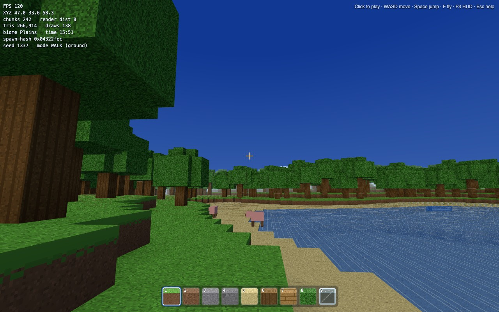
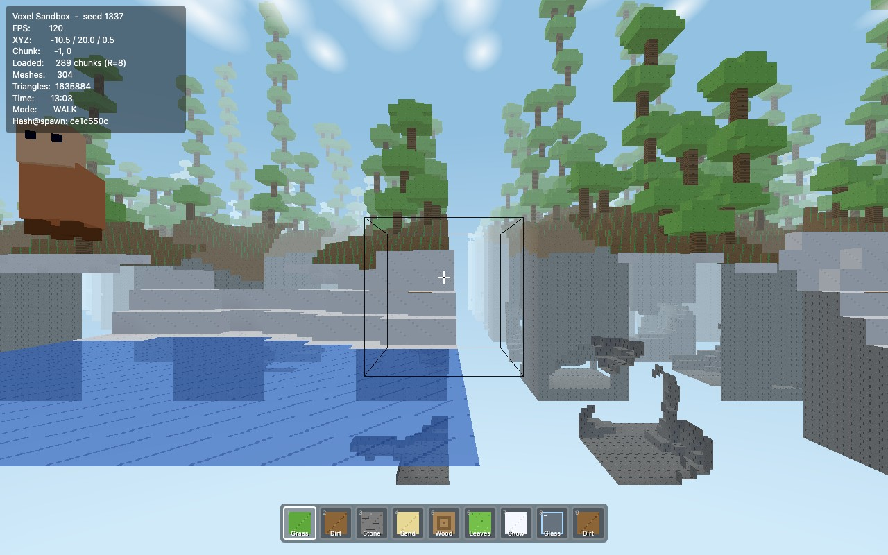
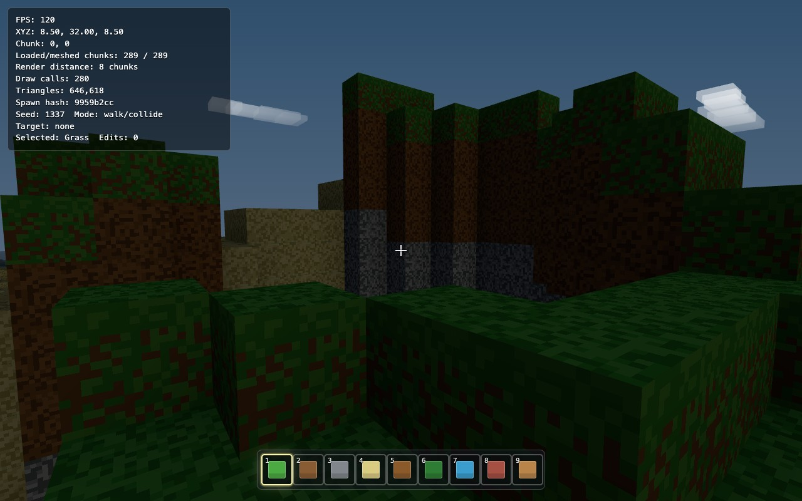
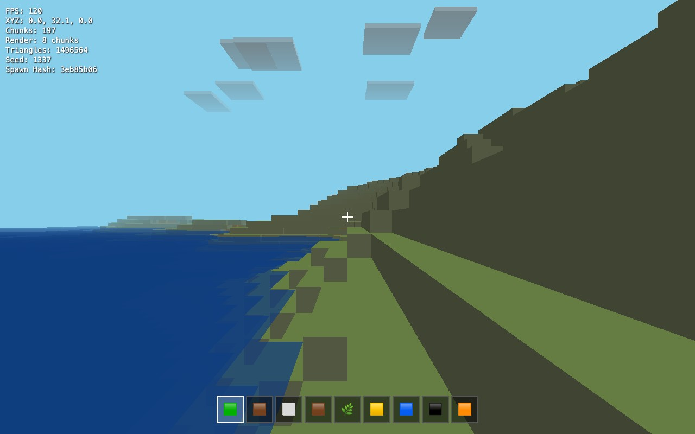
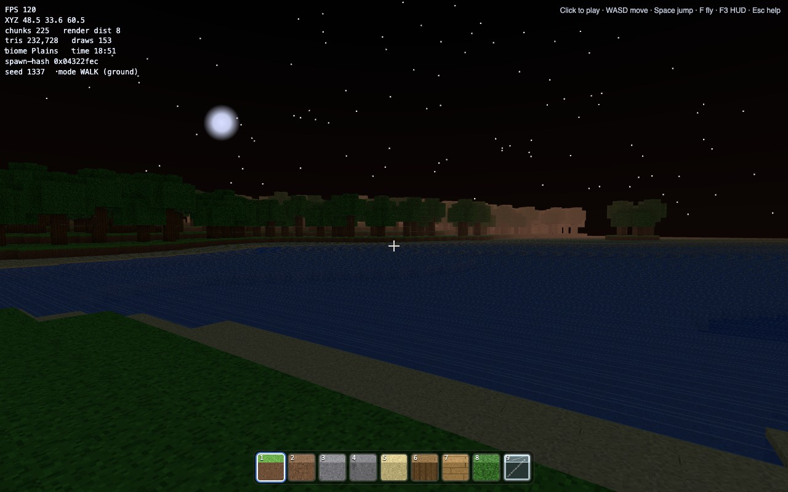

The four builds — real daylight screenshots, captured live in-browser (seed 1337)





Verdict
All four shipped running voxel worlds — but only three are actually playable. Under integration-grading,
capability and playability split apart: Opus-4.8 leads on capability (96.5) and GPT-5.5 trails it (94.5), both fully playable.
MiniMax-M3 out-points 2.7 on raw capability (65.0 vs 60.0) — richer world, real texture/AO wiring — yet its core build loop is
broken: duplicated mousedown handlers make every left-click break two blocks and every right-click place two,
and the save never restores your position, so it is not playable as a Minecraft clone. 2.7 is the opposite — flat and feature-thin,
but it plays. So on the playability-gated headline, 2.7 ranks above M3, and M3 lands last.
Leaderboards
Capability (raw rubric · 0–100)
| # | Model | Capability | Playable? |
|---|---|---|---|
| 1 | Opus-4.8 lead | 96.5 | ✓ |
| 2 | GPT-5.5 | 94.5 | ✓ |
| 3 | MiniMax-M3 | 65.0 | ✗ broken |
| 4 | MiniMax-2.7-highspeed | 60.0 | ✓ flat |
Overall (Quality + Docs + Speed · 0–130)
| # | Model | Q | Docs | Spd | Total |
|---|---|---|---|---|---|
| 1 | GPT-5.5 | 94.5 | 10 | 4† | 108.5† |
| 2 | Opus-4.8 | 96.5 | 9 | 2 | 107.5 |
| 3 | MiniMax-2.7-highspeed plays | 60.0 | 5 | 20 | 85.0 |
| 4 | MiniMax-M3 not playable* | 65.0 | 5 | n/a* | broken* |
†GPT-5.5: T = ~35 min active labor (≈30 core + ≈5 for the later overlay fix) → Speed 4 (calendar delay is a reviewer artifact). Under strict first→final-commit timing (≈205 min) Speed = 1 → Overall 105.5, in which case Opus leads Overall.
*M3: ranked last — its core build loop is unusable (both verbs double-fire; save doesn’t restore), so it fails the playability gate regardless of its 65.0 capability. Timing is also unverifiable after the MiniMax incident → Speed n/a.
Quality by bucket — all four builds across the five rubric buckets
M3's collapse is concentrated in Player + Interaction (7/22 — both core verbs double-fire) and Persistence (8/16 — no working save); its World + Rendering stay near the top of the field. 2.7's deficit is Rendering (10/22 — textures never wired into the mesh). That's the raw-capability picture — the headline still gates on playability.
How it was run & graded
Identical guide + identical PROMPT.md per agent. Grading uses the revised
working-integration rubric — a feature only earns points if it’s actually wired into the running game:
| Quality bucket | Pts | Credits |
|---|---|---|
| World / Terrain systems | 20 | chunks, seeded terrain, blocks, biomes, caves, water, trees |
| Player + Interaction correctness | 22 | movement/physics, working break/place, real inventory, fly = true no-clip |
| Rendering authenticity | 22 | procedural textures/AO wired into the mesh, lighting, fog, sky, transparent water |
| Persistence + Atmosphere | 16 | bounded localStorage save/load, day-night, clouds, mobs, Web-Audio SFX |
| Scale + Engineering robustness | 20 | streaming, culling, HUD-counter integrity, cleanup, manifest honesty |
Plus Documentation (10) and Speed (20). Two adversarial passes (Claude live-play + Codex source), then this report reviewed by Codex and re-scored under the rubric above. (These five buckets re-group the detailed seven-category rubric in GRADING.md; both total 100, but the per-bucket maxes don’t map one-to-one.)
Caveats & incidents (transparency)
“Fix start overlay click handling”
(~3 h later) fixed a real start bug. Speed uses ~35 min active labor (see leaderboard footnote for the strict-timing alternative).
12f1738) and force-added its files past .gitignore. Cleanup: reset the harness to 12f1738 and give M3 its own repo.
Harnesses & plugins (a real confound)
Each model ran in a different harness with a different plugin loadout — different planning/orchestration plugins and, crucially, different verification/vision capabilities. (Inventory from run transcripts / operator records.) This shapes outcomes — the benchmark measures model + harness + plugins.
| Harness | Model(s) | Orchestration / planning | Verification capability | Other enabled |
|---|---|---|---|---|
| Pi | MiniMax-M3, 2.7-highspeed | /goal (@matthewlam/pi-goal) + pi-dynamic-workflows + plannotator (pi-karpathy-skill installed) |
Reads rendered screenshots as image inputs — M3’s path straight into the MiniMax-1026 wall | pi-subagents, pi-web-access, pi-context, pi-tool-display, pi-simplify, pi-mcp-adapter |
| Codex | GPT-5.5 | $codex-dynamic-workflows (produced a .workflow/ plan) |
browser + computer-use — ran Chrome DevTools Protocol file:// loads: screenshot-verified the rendered textured world, console-clean check, two-load spawn-hash determinism (9959b2cc), KeyE inventory smoke (via CDP, not Playwright MCP) |
documents, spreadsheets, presentations |
| Claude Code | Opus-4.8 | Built-in Workflow / Task tools (ran Workflow ×2), launched via /goal + dynamic workflow (no OMC / oh-my-claudecode orchestration — no OMC subagents dispatched) |
Playwright MCP — live, headless screenshot self-verification (used heavily) | feature-dev, code-review, code-simplifier, frontend-design, security-guidance, typescript-lsp (superpowers & vercel off) |
The entries
Claude Opus-4.8 · ~68 min · quality lead
Highest-integrity build — ran a dedicated Playwright verification workflow and screenshot-verified itself (as did Codex, via CDP), which shows in fully-wired rendering and interaction. The screenshot caught the day-night cycle mid-night — in normal daylight play the world renders bright; the darkness is the cycle, not a rendering fault.
Issues
- highEsc while inventory open hides it but skips
requestLock()— player stranded without pointer lock. - medCaves carve to surface in sea-level columns (seabed holes); dead
three/addons/import-map entry; manifest after<!DOCTYPE>. (Spawn-hash is genuine FNV-1a;renderer.infoauto-resets per frame — both earlier flags were wrong.) - lowMob uses
Math.random()— spec-permitted, reproducibility caveat only; per-call audio buffer allocation.
GPT-5.5 · Codex · ~30 min · overall lead
Cleanest source of the four (Codex found no source issues (rubric score; real bugs exist)) and fastest of the strong builds. Full F3 HUD (~640K tris fully meshed, 289 chunks @ R=8), seeded terrain, wired AO + per-face textures, Web-Audio SFX, day-night, inventory with extra types.
Issues
- highCannot place blocks into water cells;
columnCache/treeCachegrow unbounded (never evicted). - medWater blue channel can exceed 1.0 (clipped); dry-shore “biome” is just sand; O(n)
loadQueue.includesper edit. - lowMob wander uses
performance.now()— spec-permitted; sky is a CSS body gradient (edge mismatch); caves largely hardcoded.
MiniMax-M3 · Pi · not playable*
Highest raw capability of the two MiniMax builds — richest world, real texture/AO wiring, wandering mob, snow/glass, confirmed live.
But the core build loop is broken: two live mousedown handlers (a botched de-dup at line 1858 removes nothing) make
every left-click break two blocks and every right-click place two (the second offset), and only the second edit is saved — so you
cannot build, and the world reloads wrong. A beautiful engine that is, as a game, unplayable — confirmed by hands-on play.
Issues
- critBoth core verbs double-fire. Two active
mousedownlisteners (lines 1743 + 1860; the “cleanup” at 1858 removes a throwaway anonymous fn): LMB breaks two blocks, RMB places two. Controlled building/mining is impossible — this is what makes it unplayable. - critNo working save. Only the second (tracked) edit reaches
editLog, and the saved position is overwritten byfindSpawn()on load — the world reloads inconsistent with what you built. - highFly mode still collision-aware — not true no-clip; docs claim working no-clip and 9 distinct placeables the source doesn’t deliver (9 hotbar slots but only 8 distinct placeable blocks). The targeted-block highlight, however, does work. Manifest dishonesty → Docs 5.
- medCaves capped at y≤14 (none above sea level); AO offset directions are fixed per-face (always the +tangent axes) instead of varying toward each corner → asymmetric/incorrect corner AO; spawn-hash recomputed every frame; debug globals left in.
- lowWhy capability stays at 65: movement, camera, world-gen and rendering are genuinely strong; the points it loses are concentrated in the unusable interaction + persistence layer.
MiniMax-2.7-highspeed · Pi · ~7 min · playable
Astonishing breadth for a 7-minute build — and lower-capability than M3, but it’s the one MiniMax build you can actually play: single-action break, coherent traversable world. Integration-grading is still brutal — its declared textures, AO, block placement, and save are not wired up, so much of what the manifest claims doesn’t work — yet the core loop holds together.
Issues
- critRight-click PLACE fully broken (stale
targetedBlock.place— always undefined). - critProcedural textures & AO defined but never wired into the mesh — terrain renders flat vertex-colors only (Rendering 10/22).
- crit
saveGame()serializes ~200 chunks into 5 MB localStorage → guaranteedQuotaExceededError; HUD hidden on load until F3. - highInventory == hotbar; both biomes share one surface block; FPS = last-frame dt; unseeded
Math.random()textures. - medNo compliant top-of-file HTML FEATURE MANIFEST; manifest is JS comments inside module.
The two adversarial reviews
Two independent passes drove these scores: a Claude workflow playing each game live in a browser, and Codex reviewing source (Codex also ran its own CDP runtime + screenshot pass, so the Claude live-play is a second, independent runtime check). Overlapping findings are high-confidence; Codex’s static findings (2.7 textures-not-wired, M3 fly-not-no-clip + save-overwrite) are what pulled those two down under integration-grading.
<!DOCTYPE html> before the
FEATURE MANIFEST (spec required it first); 2.7-highspeed has no compliant top-of-file HTML manifest at all (JS comments
inside the module); and several entries marked rubric features “implemented” that the source shows missing, stubbed, or broken.
Why the revised rubric?
The old rubric awarded near-full credit for declared features. The revised rubric requires working integration: a feature has to be wired into the running game, not merely named in code or described in a manifest.
That matters most for MiniMax-2.7-highspeed: textures were defined but not mapped to the mesh (vertexColors only);
the AO helper exists but is unused; block placement is source-broken; and inventory equals hotbar. Speed also uses GPT-5.5’s
35 min active labor, not calendar delay. M3 Speed is n/a because timing is unverifiable after the MiniMax incident.